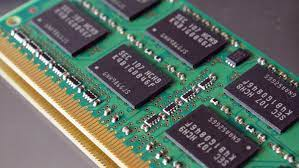

Les différents types de mémoires
La mémoire de masse

La mémoire de masse a pour particularité d'enregistrer de façon permanente des informations sur des disques durs, contrairement à la la mémoire vive que nous allons voir à la fin de cet article.
Un des avantages de ce mode de stockage est l'espace de plus en plus énorme qu'il propose, qui va jusqu'à 8 To de nos jours. Le problème de cette mémoire est qu'elle n'est pas assez rapide pour les ordinateurs, elle sert à stocker des données, mais l'ordinateur a besoin de la RAM pour fonctionner de manière rapide.
Certains PC actuels utilisent des disques SSD, aussi grand dans leur espaces que les disques durs HDD, leur avantages est qu'il permet une vitesse des transferts de donnée bien plus rapide, car les informations sont enregistrés sur des puces mémoires, et non sur des disques physiques.
La mémoire vive
La mémoire vive, aussi appellé RAM, est une mémoire volatile. Cela veut dire que les données qu'elle contient sont perdus si l'alimentation en électricité est coupée.
La mémoire vive est utilisée dans les ordinateurs pour le traitement des données, car elle est beaucoup plus rapide que la mémoire de masse, et elle permet donc de meilleures performances pour l'ordinateur. Plus un ordinateur aura de mémoire RAM, plus sa fluidité en terme de calcul et d'affichage sera élévée.